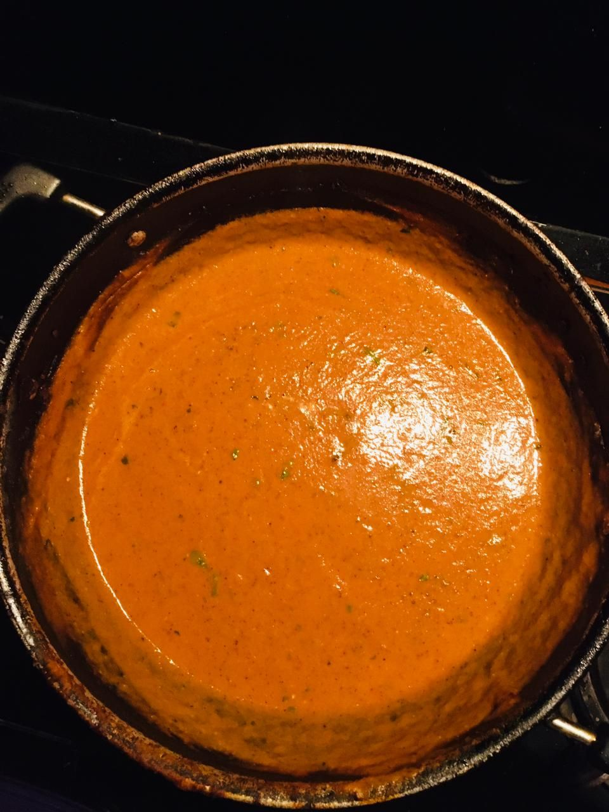

Description
One of the most positive reviews yet.
Ingredients
- Jeera/Cumin Seeds
- Tej Patta
- Leaf
- Cardamom
- Elachi
- Red Onions
- Tomatoes
- Ginger-Garlic Paste
- Ginger
- Garlic
- Chilies
- Coriander leaves
- Cashew
- Kasuri Methi
- Honey
- Many More
Steps
- Clean the boneless chicken(500g), if thigh pieces make incisions to allow for better cooking. If breast pieces make butterfly slice them from the middle along with the incisions.
- Pound the chicken or hammer the chicken with the spine of the knife to break down the muscle fiber, make sure the chicken is intact as a whole piece, pound all the chicken pieces in same way.
- Set a wok on medium high heat, add oil(1-2 tbsp), whole spices( Jeera, tej patta(2), elachi(3-4)) & sliced onions, cook until the onions are translucent. Add some ginger garlic paste to taste.
- Too many steps refer the link below instead
For additional recipes check out here
Return to top